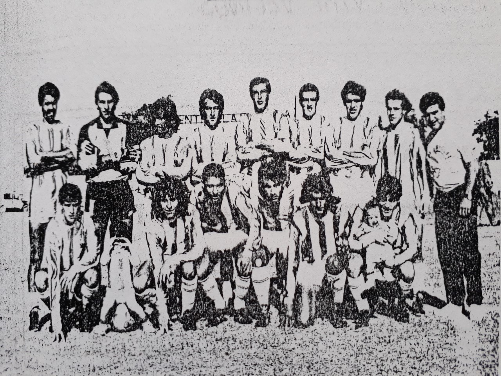
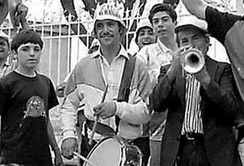
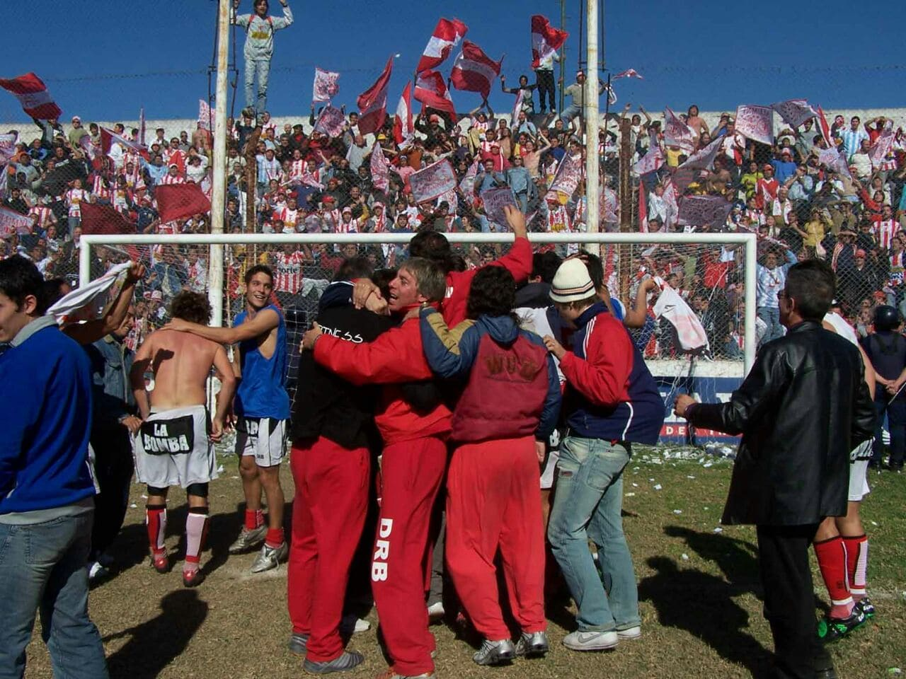

Bienvenidos al museo de Alumni
Historia breve de un gran club
El Club Atlético Alumni nace a causa de la fusión de otros dos clubes de Villa María: el Club
Blanco y
Negro y el Club Internacional, el 4 de abril de 1934. El club nace bajo la conducción de
Faustino A.
Castillo, Renato Risso, Atilio Trevisán (h), José Vico, Arturo Gauna, Rogelio Ferrari y Rafael
Pfeiffer.
Por entonces, la unión de dos clubes del barrio Villa Aurora, daban a luz al nuevo club de
barrio, que
luego, con el paso de los años y de los títulos, se transformaría en el club de la ciudad. El
nombre
elegido por los fundadores, Atlético Alumni, fue en honor al primer cuadro glorioso que tuvo el
fútbol
argentino, el Alumni Athletic Club de los hermanos Brown desaparecido en 1911. Cierto es que
desde allí,
quizás por la buena suerte que acarreaba ese nombre, como así también por la osadía de sus
dirigentes,
el club villamariense fue ganando jerarquía en el fútbol local, provincial, nacional e
internacional.
Así, la institución sumó muchas copas importantes en sus vitrinas, y tuvo rivilegio de tener,
entre sus
filas, a figuras del fútbol nacional como el "Loco" Salinas, Miguel Ángel Ludueña, Luis Alberto
Carranza, Roberto Monserrat, Hernán Medina, Nelson Ibáñez, etc.; además de ser dirigido por
técnicos
reconocidos como Miguel Ángel López, Miguel Brindisi y quien lo llevara al esplendor como el
desaparecido Hernán Ríos.


27 de septiembre - Dia del hincha de Alumni
Tras conmemorarse el fallecimiento del "el pato" reconocido hincha del club, se decidion
dar homenaje nomabrando a dicho dia (27 de septiembre) como el dia del hincha de Alumni
El Ascenso
En 2006 Alumni consiguio lo que seria su mas grande logro a nivel futbolistico, el preciado
ascenso al torneo Federal A, tercera categoria del futbol argentino.
